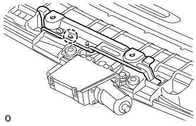
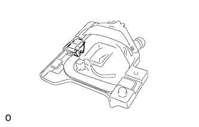
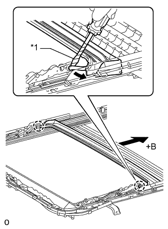
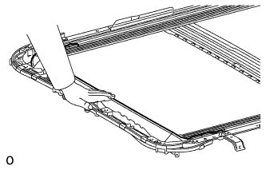
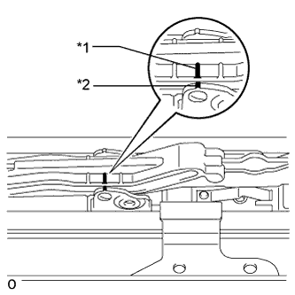
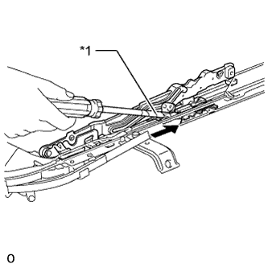

КОЖУХ ЛЮКА > РАЗБОРКА |
| 1. СНИМИТЕ ПРИВОДНОЙ МЕХАНИЗМ ЛЮКА В СБОРЕ |
|  |
Отсоедините захват кронштейна и снимите кронштейн.
Выверните 2 болта и снимите приводной механизм.
| 2. СНИМИТЕ СОЛНЦЕЗАЩИТНУЮ ПАНЕЛЬ В СБОРЕ |
| *a | Назад | - | - |
Выверните 2 винта.
Отсоедините 4 захвата и снимите левую и правую части люка.
Сдвиньте и снимите панель облицовки.
| 3. СНИМИТЕ ЛЕВЫЙ СТОПОР СОЛНЦЕЗАЩИТНОГО НАВЕСА ЛЮКА |
|  |
Снимите стопор.
| 4. СНИМИТЕ ПРАВЫЙ СТОПОР СОЛНЦЕЗАЩИТНОГО НАВЕСА ЛЮКА |
| 5. СНИМИТЕ ТРОС ПРИВОДА ЛЮКА В СБОРЕ |
Выверните 2 винта и снимите 2 стопора.
|  |
С помощью отвертки отсоедините 2 захвата, сдвиньте задний водосточный желобок крыши назад и снимите его.
| *1 | Защитная клейкая лента |
| *a | Назад |
|  |
Удерживайте рукой оконный отражатель.
|  |
Нанесите метки на трос привода люка в сборе в точках A и B, показанных на рисунке.
| *1 | Метка A |
| *2 | Метка B |
|  |
Отверткой сдвиньте трос привода люка в направлении, указанном на рисунке стрелкой, и снимите его.
| *1 | Защитная клейкая лента |
 | Сдвиг |